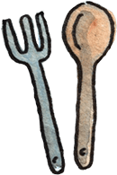
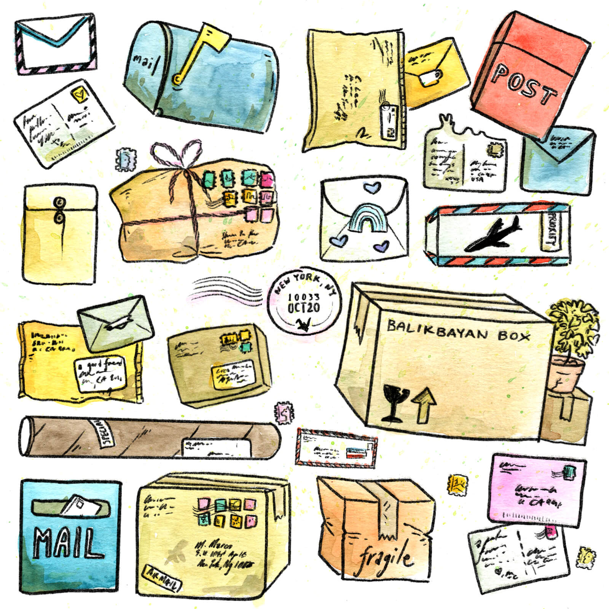
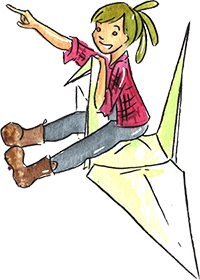

With the help of local volunteers and allies across the world, we met our goals of folding 1000 paper
cranes and raising $10,000 in 24 hours for the National Immigration Law Center (NILC) and International Rescue Committee of New York in 2017.
Unfortunately, the situation for refugees and immigrants entering the United States has only gotten worse, so we’re asking you
to stand with us again to support the NILC and RAICES.
Take a seat at the table as we fold 1000 paper cranes in 24 hours. That’s about 42 cranes per hour (without sleep) – 1 crane every 90 seconds!
About the project
Resistance Cranes is a collaborative fundraising effort started by Shing Yin Khor, Christina Lee, and Matthew Marcó to raise money immigrant and refugee causes.

Inspired by the Japanese legend,
for 24 hours starting at 4 pm EST on Friday, October 19, 2018,
two small crews of volunteers in New York and Texas are folding 1000 paper cranes in solidarity with immigrants and refugees who make
their way to American shores in search of a new home.
This year, we are raising $10,000 ($5000 each) for these organizations:
Established in 1979, the National Immigration Law Center (NILC) is one of the leading organizations in the U.S. exclusively dedicated to defending and advancing the rights of low-income immigrants.
Established in 1986, the Refugee and Immigrant Center for Education and Legal Services (RAICES) is the largest immigration legal services provider in Texas.
Folded dimensions are 4×4×7 inches, based on an
original paper size of 6×6 inches.
The custom paper design by artist Shing Yin Khor (detail below) recalls letters and parcels
sent across continents by immigrant families.
Hover to zoom in

The creators

Shing Yin Khor is a cartoonist, sculptor and installation artist.
She has done two artist residencies with the National Park Service, and has been featured in The Huffington Post. She immigrated
to the United States at 16, becoming an American citizen at 28. When thinking about migration,
peace, and home, she thinks of a very well-travelled rice cooker.
Christina Lee is a product manager for an education company in Brooklyn. She is the daughter of an immigrant.
Born as an American abroad, she moved to the United States when she was 12. When thinking about migration, peace,
and home, she thinks of cooking her mom’s chicken curry and the
feeling of settling into a comfy bed after a long journey.
Matthew Marcó is a web designer. He immigrated
to the United States at age 5 and became an American citizen at age 16. When thinking about migration,
peace, and home, he thinks of how public transportation becomes a part of immigrants’ lives when
they settle in new cities.
Shipping costs
To cover the travel expenses and materials for our cranes, shipping costs start at $2. The full price table follows below:
Number of cranes
U.S. Shipping
Int’l Shipping
1-2 cranes
$2
$5
3-4 cranes
$3
$6
5-7 cranes
$5
$8
8-9 cranes
$7
$10
10 or more cranes
$10
$15
If you don’t have PayPal ☞ You can still check out! At the bottom of the log in form, you’ll see a link to pay with a debit or credit card. All major credit cards are accepted.